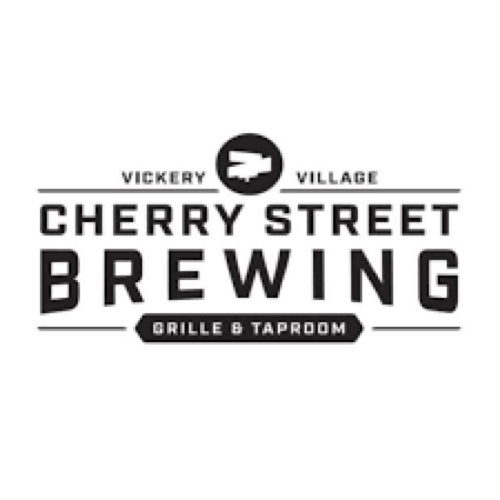
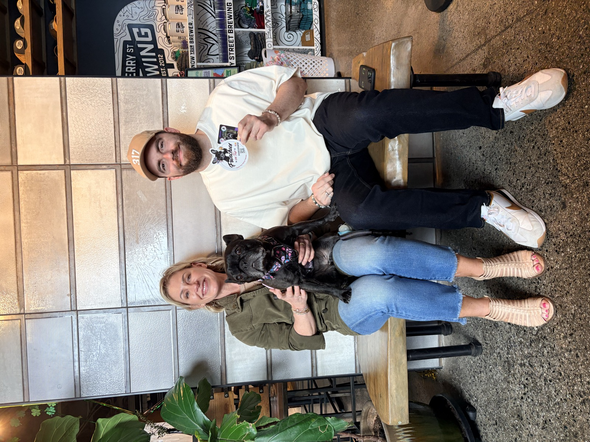
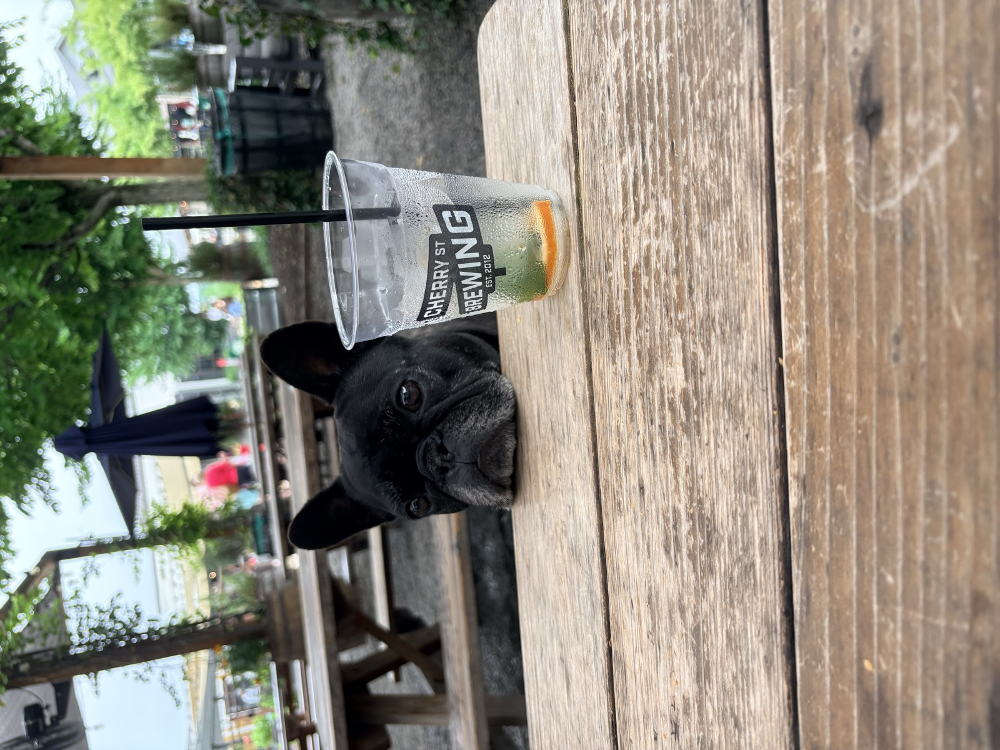

"The original Forsyth County brewery — the first ones legally allowed to whip up craft beer in the area."
🐾🎉 Hey there, my fabulous fur-friends! Let me tell you about my latest adventure at Cherry Street Brewery in Vickery Village! Now, let me drop some knowledge on you: they're the original Forsyth County brewery, the first ones legally allowed to whip up craft beer in the area. Talk about a paw-some legacy! 🍻✨
Not only do they serve up some seriously good brews and tasty bites, but this place is also super dog-friendly! They really roll out the red carpet for us pups, especially for Frenchies like yours truly. I made a whole pack of friends, including our beertenders, Leah and Zach. Leah was a total gem—every time she came in and out, I got a fresh round of pets! I mean, can you blame her? Who wouldn't want to pet this adorable face? 😍🐶
Now, let's talk about the food! They've got these things called chicken lips, and let me tell you, they were lip-smackin' good! I was begging for a taste, but my humans insisted on buffalo style. Rude, right? No chicken for me! But they did have treats, so I guess I'll let it slide this time. I mean, who can stay mad when there are snacks involved? 🍗🐾
Now, onto the important stuff—THE BEER! My humans went all out and tasted everything Cherry Street had to offer. For their go-to style, the IPAs, they tried the West LA Hopaway, Soul Rebel Hazy, and Les Brers. All of these got well over a 3 on Untappd, which is like a gold star in the beer world! But the real winner of the day? Drumroll, please… the Black Throated Stout – Sour Blackberry! It was unexpectedly fantastic, and my mom was practically begging for seconds. I mean, who knew beer could be so fancy? 🍺🍇
Cherry Street has a super cool bar area and a large outdoor seating area, perfect for soaking up that beautiful Atlanta spring weather. Plus, it's in a prime spot for me to send some peemail to all my doggy pals. If you're in the Vickery area, you've got to check this place out! Trust me, you won't regret it! 🐾❤️ Cheers to good times, great brews, and even better friends! 🍻✨

